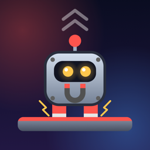

Support · Destek
Support
Found a bug, stuck on a level or have an idea? Write to c.cengizay@gmail.com. Please mention your device model and iOS version. We usually reply within a few days.
How do I play?
Hold the screen to charge Zotti's magnet, then let go to launch. Release while the gauge is in the Tune zone for the strongest jump and a streak bonus. Opposite colours attract and the same colour repels, so tap the screen (or the ± button) in the air to flip Zotti's colour before landing.
What are bridges and batteries?
Repair cracked plates by landing on them. When a bridge is ready, swipe up to build one under you. The battery drains as you climb; collect green cells to refill it.
How do I turn the sound off?
Tap the gear button in the top corner of the hangar (home screen) to open Settings, where you can turn sound effects on or off and change the volume. Zotti also stays silent when your iPhone's ring/silent switch is set to silent.
What about leaderboards and vibration?
Sign in to Game Center to compare your Endless Tower height and total stars on leaderboards and to earn achievements; open them from Settings › Game Center. Vibration on key moments can be switched off in Settings.
What are nuts, quests and the Garage?
You collect nuts while you climb. Three weekly quests (the same for every player, renewed each Monday) pay extra nuts. Spend nuts in the Garage on new robot looks; some looks are earned with stars instead. Nuts cannot be bought with real money, and the colours that show the robot's pole stay the same on every look.
Will I lose my progress?
Progress (levels, stars, records, nuts, quests and robot looks) is saved on your device. It is kept through updates but deleted if you delete the app. It is not synced between devices. To start over, use Reset progress in Settings; it deletes all of this but keeps your sound and vibration settings.
Which devices are supported?
iPhone and iPad with iOS 16 or later.
Privacy
Zotti collects no data. Read the privacy policy.
Destek
Bir hata mı buldunuz, bir bölümde mi takıldınız ya da bir fikriniz mi var? c.cengizay@gmail.com adresine yazın. Lütfen cihaz modelinizi ve iOS sürümünüzü belirtin. Genellikle birkaç gün içinde yanıt veririz.
Nasıl oynanır?
Zotti'nin mıknatısını şarj etmek için ekrana basılı tutun, fırlamak için bırakın. Gösterge Tam Ayar bölgesindeyken bırakırsanız en güçlü sıçrayışı ve seri bonusunu alırsınız. Zıt renkler çeker, aynı renkler iter; inmeden önce havadayken ekrana dokunarak (ya da ± düğmesiyle) Zotti'nin rengini değiştirin.
Köprü ve batarya nedir?
Çatlak plakaların üstüne inerek onları onarırsınız. Köprü hazır olduğunda yukarı kaydırarak altınızda bir köprü kurabilirsiniz. Tırmandıkça batarya azalır; yeşil hücreleri toplayarak doldurun.
Sesi nasıl kapatırım?
Hangar'da (ana ekran) üst köşedeki dişli düğmesine dokunarak Ayarlar'ı açın; buradan ses efektlerini açıp kapatabilir ve ses düzeyini değiştirebilirsiniz. iPhone'unuzun zil/sessiz anahtarı sessizdeyken Zotti de ses çıkarmaz.
Liderlik tabloları ve titreşim?
Sonsuz Kule yüksekliğinizi ve toplam yıldızınızı liderlik tablolarında karşılaştırmak ve başarım kazanmak için Game Center'a giriş yapın; bunları Ayarlar › Game Center'dan açabilirsiniz. Önemli anlardaki titreşimi Ayarlar'dan kapatabilirsiniz.
Somun, görevler ve Garaj nedir?
Tırmanırken somun toplarsınız. Her pazartesi yenilenen ve herkes için aynı olan üç haftalık görev ek somun kazandırır. Somunları Garaj'da yeni robot görünümleri için harcayabilirsiniz; bazı görünümler yıldızlarla açılır. Somun gerçek parayla satın alınamaz ve robotun kutbunu gösteren renkler her görünümde aynı kalır.
İlerlememi kaybeder miyim?
İlerlemeniz (bölümler, yıldızlar, rekorlar, somunlar, görevler ve robot görünümleri) cihazınızda saklanır. Güncellemelerde korunur, ancak uygulamayı silerseniz silinir. Cihazlar arasında eşitlenmez. Baştan başlamak için Ayarlar'daki İlerlemeyi sıfırla seçeneğini kullanın; bunların hepsini siler ama ses ve titreşim ayarlarınız kalır.
Hangi cihazlar destekleniyor?
iOS 16 veya üstü yüklü iPhone ve iPad.
Gizlilik
Zotti hiç veri toplamaz. Gizlilik politikasını okuyun.